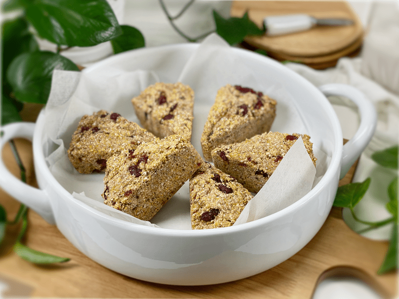
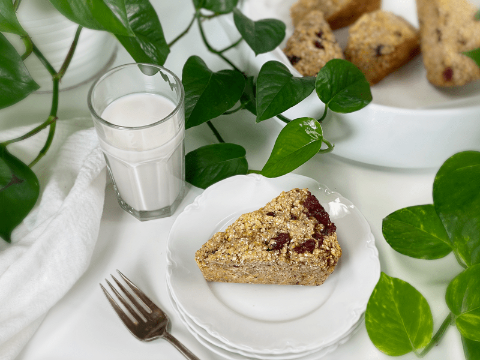
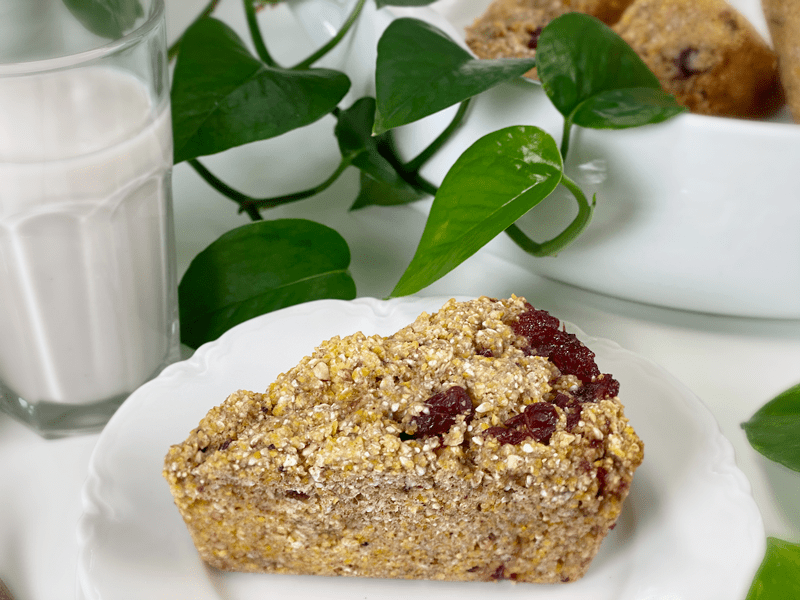
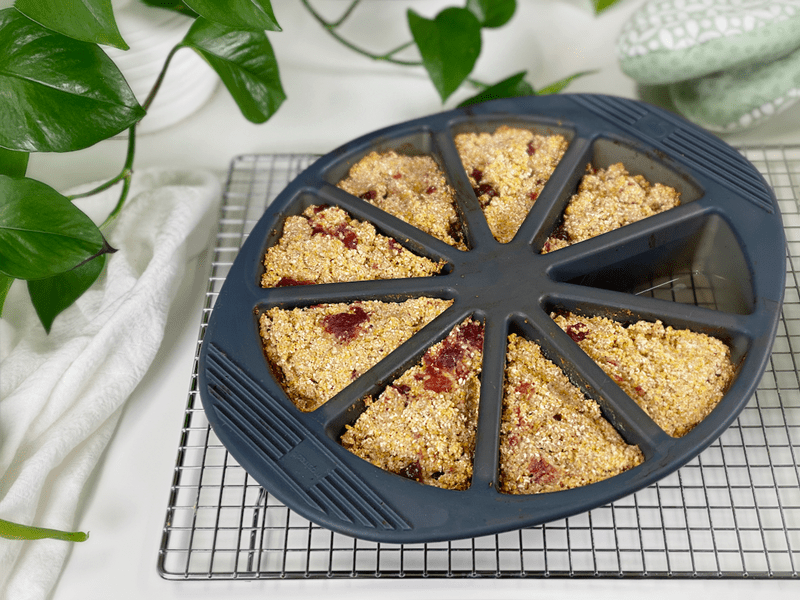
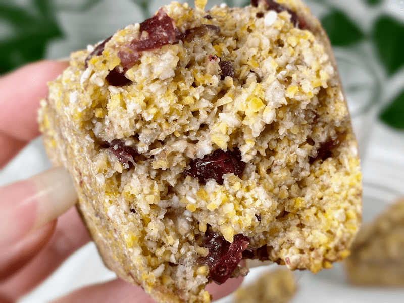

Cranberry Cornbread Scones | Cooked | Gluten-Free | Nut-Free | Oil-Free | Vegan
We are going to be super creative today and make scones from scratch using vegan homemade buttermilk, polenta, buckwheat, cranberry sauce, and a few other supporting ingredients. The sweet and savory combination of these scones tastes amazing as a side to your favorite soup or stew, but they can also be enjoyed with a cup of hot tea on a chilly afternoon. They would also make for a delicious “pastry” served up for brunch by shifting the ingredients a tad, which I will share down below.

When I first presented these scones to Bob, he appeared skeptical. “Polenta and cranberries, huh? Are we getting low on groceries?” Oh, he’s a funny one. “You have never doubted my cooking abilities, Mr. Blue Beard [yes, he has a blue beard], and now is not the time to start.” I asked him if he wanted a scone. He smiled and said that he just wanted a bite, since he wasn’t hungry. He popped a piece into his mouth and went back to some blueprints that he was studying. “Well, how is it? Don’t leave a chef hanging!”
He looked at me and said it was good. Why not fantastic, delicious, OMG! or something along those lines? While I was having an internal conniption fit he followed it by saying, “Can I have another piece?” … then another, and another, and another. Before he knew it, he ate a whole scone. “Not hungry?” I muttered inwardly with a giggle in my heart. Throughout the day, he kept telling me how tasty those scones were and that he looked forward to having another.

Texture and Flavor
Just in case you are having a hard time imagining what these may taste like or what texture they may have, I will help you out by sharing that these scones have a delicious crunchy texture, slightly reminiscent of cornbread, from the combination of polenta and buckwheat. They are baked in a hot oven, which turns the outside crust light golden brown and crisp, yet the inside remains soft and tender. The flavor is also similar to cornbread, with the lovely addition of moist pockets of cranberry sauce.

Breakfast Scone Adjustments
These scones have a delicate balance between sweet and savory, but as I mentioned above, they would be perfect served as a “pastry” by adding an extra tablespoon of sweetener, 1/3 cup chopped pecans, and perhaps a drizzle of one of the following icings: Home-Style Vanilla Bean Icing or Lemon Coconut Cream Icing. I can’t wait until I host our next family gathering, because these are going on the menu!

Ingredient Run-Down
Polenta (cornmeal)
- Polenta is really considered a dish, not an ingredient. It’s a porridge made from coarsely ground cornmeal. True polenta is made from a specific variety of corn called eight-row flint, or otto file in Italian, and is milled differently from cornmeal, which yields a different, fuller mouthfeel.
- You can substitute polenta with regular medium-ground cornmeal if desired. Do NOT use finely ground cornmeal, or it will give a pasty texture to the scones.
Cranberry Sauce
- You can substitute the cranberry sauce with dried cranberries, but keep in mind that there is more moisture in cranberry sauce than the dried cranberries, so be sure to add 1-2 tablespoons of water to make up the difference.
- Whether you make or buy the cranberry sauce, make sure that it isn’t runny. If it is, drain before folding it into the scone batter.
- I don’t recommend fresh cranberries, since they are bitter and wouldn’t provide the results that I created in this recipe.
Vegan Buttermilk
- Buttermilk is a common ingredient in many recipes, with practically no vegan substitutes commercially available. So, we are going to make our own by combining plant-based milk + raw apple cider vinegar + 15 minutes of your time. Lemon juice can be used in place of the vinegar if need be.
- How does it work? The acids curdle the proteins in milk, which allows a multitude of complex flavor compounds to be produced. Before curdling, the proteins in the milk are coiled up like little balls of yarn. The acids allow these proteins to unfold and cause the mixture to thicken as the flavor compounds are generated. This thickened, curdled mixture can further improve vegan baking performance by increasing leavening power and enhancing the crumb quality of cakes and muffins.
- Not ALL plant-based milks will curdle well, because curdling depends on the protein level. In order, the following kinds of milk curdle the best: soy milk, nut milk, hemp seed milk, and coconut milk. Other plant-based kinds of milk will work (in this recipe) but you might not get that “buttermilk” curdling action.
Psyllium Husks
- For a vegan egg replacement, I am using psyllium husks in this recipe. Do not skip this, as it holds the ingredients together.
- Be sure to use the husks, not the powder version, as it will create a denser texture in the scones.
Sweeteners
- I chose to use maple syrup and liquid stevia as my main sweeteners. Since this recipe yields up to 8 scones, that means there is only 1/4 teaspoon of maple syrup per scone. Granted, the cranberry sauce will add some sugars, but overall they are low in sugar. I added the stevia to brighten the maple syrup without having to add more sugars to the recipe.
- Raw honey would be a wonderful replacement, as it goes hand in hand with cornbread.
Last-Minute Musings
- Baking Pan: I am not stating that you have to make these scones in a special pan, but I will say that I love my silicone scone pan. I tried finding a link to the exact one that I have, but I’ve had it for so long that I couldn’t find it. However, I found one for you on Amazon if interested. Click (here). I have made this recipe many times over and hoped to bake it in a typical pie pan but I discovered that I don’t own any pie tins anymore. I am guilty of gifting desserts, and the pans go with them.
- Don’t Overbake: Bake until a toothpick comes out dry. The scones do color some, but not a tremendous amount, so don’t go by color.
 Ingredients
Ingredients
Yields 7-8 scones
- 1 1/2 cups polenta
- 1 cup raw buckwheat
- 2 Tbsp psyllium husks (not powder)
- 1/2 tsp baking soda
- 1 tsp sea salt
- 1 cup unsweetened plant-based milk
- 1 Tbsp apple cider vinegar
- 2 Tbsp maple syrup
- 1/4 tsp liquid NuNaturals stevia
- 3/4 cup sweetened cranberry sauce–hand mix in
Preparation
- Preheat the oven to 450 degrees (F) and line the baking dish with parchment paper, unless you are using a silicone pan.
- In a measuring cup, combine the plant milk and apple cider vinegar; set aside for 10 minutes so it can curdle (think buttermilk), while you prepare the remaining ingredients.
- I used oat milk in these scones.
- You know it’s ready when the milk looks grainy and curdled.
- In a food processor, fitted with the “S” blade, combine the polenta, buckwheat, psyllium, baking soda, and salt. Process long enough to start breaking down the buckwheat.
- Add the maple syrup, stevia, and “buttermilk.” Process till well combined.
- Fold in the cranberry sauce. You don’t want to overmix to the point that the batter turns pink.
- Scoop the batter into the baking vessel and bake for 17 minutes until a toothpick comes out dry when testing it for doneness.
- Immediately transfer the scones to a cooling rack so the bottoms don’t get soggy.
- Store on the counter in an airtight container for roughly 3 days. These also freeze and thaw well.
-

-
Fresh out of the oven.
-

-
Extreme close-up showing you the inner texture. Look at all that goodness!
© AmieSue.com